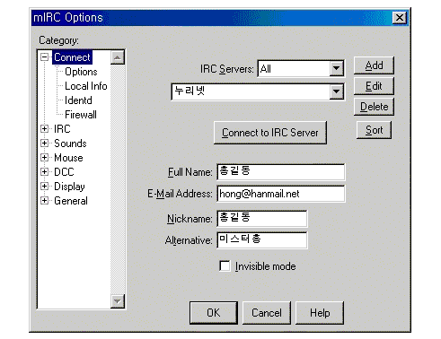
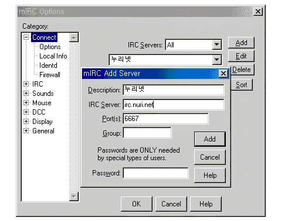
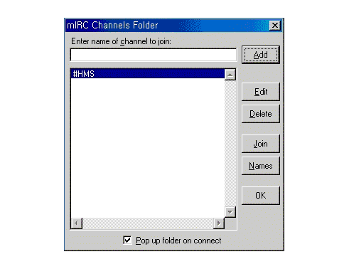

|
MIRC 사용법을 배우자
|
|
|

MIRC인스톨을 끝내고 프로그램을 실행시키면 커다란 메인창이뜨고, 그
안에 이화면이 뜰것이다. 이화면은 IRC의 옵션및 서버를 선택 하는
창이다. 옵션부분을 건드릴 필요가 없을 것이다. 만약 옵션을 스스로
설정하고 싶다면 다른 메뉴얼을 찾아보기 바란다. 화면에서 Full Name,
E-Mail Address, Nick Name, Alternative 는 사용자의 입력사항이므로
예제를 참고하여 반드시 입력하기 바란다.
|
|
|

화면에서 ADD버튼을 누르면 이화면이 뜰것이다. 이화면은 새로운 서버를
등록하는 창이다. Discription, IRC Server 만 입력하자. 예제를
참조하기 바란다. 아마 다를것을 안바꾸어도 될것이다.
|
|
|

이번화면은 채널을 설정하는 화면인데 자신이 가고싶은 채널의 이름을
채널이름에 쓴후 ADD버튼을 누루면 채널 리스트 창에 채널이
등록될것이다. 이제 등록된 채널을 더블클릭 해보자. 지금까지 과정을 잘
따라했다면 아무 문제없이 채널에 접속 하게 될것이다. 즐쳇하기
바란다... 호호호
|
|